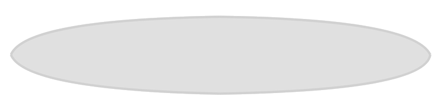
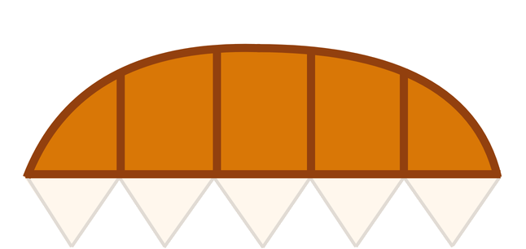
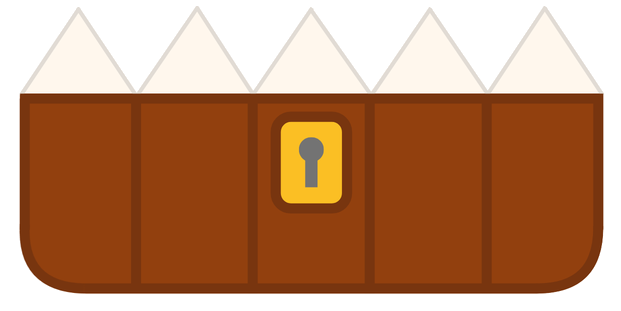

O Chompbox é um montador de encontros de D&D 5e que eu queria ter desde a faculdade, inspirado no Kobold Fight Club, mas com a lógica de geração automática do meu jeito e sem depender de site de terceiro pra uma coisa que mexo toda semana.
Eu já queria fazer um site assim desde o início da faculdade. Não pra copiar ou roubar a ideia de ninguém, eu gosto muito de RPG, e a ideia parecia bem palpável: um site que pega as criaturas, faz a matemática do D&D e te dá um encontro pronto. Olhando pra trás, pro Gabriel de antes, era literalmente "só isso".
O Gabriel de hoje pensa a mesma coisa. Só que sem o "só" no início da frase.
O que é um encontro
Se você não joga D&D, um resumo rápido ajuda a entender o resto da página. Numa sessão de mesa, o mestre (quem narra a aventura) de vez em quando bota o grupo de jogadores contra um ou mais monstros. Isso é um encontro.
Pra não ficar fácil nem impossível demais, existe uma conta por trás. Cada criatura tem um Challenge Rating (CR), um número que estima o quão perigosa ela é sozinha, e cada grupo de jogadores tem um orçamento de XP baseado no nível e na quantidade deles. Montar um encontro bom é escolher criaturas que, somadas, fiquem dentro desse orçamento. É exatamente essa conta que o Chompbox automatiza.
Meu processo
Pesquisei o Kobold Fight Club.Usei a lógica dele como norte antes de escrever qualquer código, queria entender direito o que fazia o site funcionar bem antes de sair inventando por cima.
Reparei que só tinha uns 300 monstros.Achei pouco, e como qualquer programador inexperiente com muito tempo livre, decidi criar meu próprio banco do zero. Foi aí que começou minha dor de cabeça de verdade.
Juntei mais de 4.500 criaturas via Python.De fontes bem diferentes espalhadas pela internet, sem padrão nenhum entre elas: tinha D&D, outros sistemas de RPG, jogos e até criatura de série de TV misturados.
Padronizei o banco em várias rodadas.Parte por IA, parte por script, parte na mão. Foi de longe a etapa que mais demorou, quase dois meses inteiros arrumando campo por campo.Ver essa parte
Desenhei o mímico e a logo.Depois de mais de dois meses só no banco, umas duas semanas de cereja no bolo: fui no Canva mexendo imagem por imagem, com o mesmo cuidado que gastei nos tamanhos dos filtros.Ver essa parte
Fechei com os filtros e o gerador de encontro.A lógica do gerador eu já tinha pronta de uns 3 meses antes, sobrou só polir os filtros visuais e juntar tudo numa interface só, testando bastante com criaturas reais do banco.Ver os filtrosVer o gerador
O banco de dados
Como eu não tinha uma API própria além da que já vinha usando, fui atrás sozinho: juntei mais de 4.500 criaturas de fontes espalhadas pela internet, via Python. Tinha de tudo, D&D, outros sistemas de RPG, jogos, até criatura de série de TV. O problema nunca foi pouco dado, foi dado sem padrão nenhum.
Imaginei como seria a busca no site final e desenhei um padrão pra cada campo. Depois era "só" encaixar as 4.500 criaturas nele. Uma parte dava pra ajustar por código, mas a maioria, uns 80%, era praticamente impossível assim, cada uma escrita de um jeito diferente. Botei a mão na IA: um script mandava cada criatura, uma por uma, pra um chat com um prompt pedindo pra deixar no padrão. Dois dias rodando depois, nem metade tinha ficado certo, e boa parte do que ficou não estava boa o suficiente.
Não dava pra ficar mandando de novo esperando dar certo sozinho. Vou deixar uma imagem do VS Code do lado pra vocês verem quanto tempo perdi nisso: escrevi uma trilha de scripts em Python, mais de 30, numerados, e fui arrumando na mão o que dava. Cada script resolvia um problema de cada vez: padronizar bioma, unificar tipo de criatura, separar sistema de origem, entre outras coisas que eu ia encontrando pelo caminho.
Por exemplo, 904 criaturas tinham a fórmula de dado certa em hit_points mas o número final errado, recalculadas a partir do dado (a fonte de verdade em D&D). O campo type_base foi de 30 valores pra 17, juntando sinônimo tipo Fiend/Diabo/Demônio numa categoria só, e biomes foi de 86 pra 71. Teve script só pra separar system de source, que originalmente era um campo só meio confuso, misturando "é D&D 5e" com "de que sourcebook veio". Foi aí que apareceu o crossover com Magic: The Gathering e com Stranger Things, escondido no meio de criaturas marcadas como "sistema próprio".
As relações entre criaturas foram a parte mais difícil de resolver só com script, essa levou mais 3 passagens de IA até ficar boa. No fim não é um banco perfeito, mas é bom o suficiente pra usar sem me dar dor de cabeça, e olhando pra trás valeu cada uma das noites que passei escrevendo esses scripts um por um, testando de novo, e corrigindo o que ainda tinha ficado torto.
Um exemplo divertido de como uma criatura fica no banco final: sim, o Demogorgon de Stranger Things está lá dentro, registrado separado do demônio de mesmo nome do D&D oficial (o campo system foi feito exatamente pra isso, distinguir de onde cada criatura veio de verdade).
Aceitam um sufixo de intensidade: sem nada é padrão, +/++ é mais intenso, - é menos, e * marca uma variante especial (só em identity). "Floresta+" e "Floresta" são o mesmo bioma em intensidades diferentes.
relations
Cada item é um sinal mais um alvo. ! inimigo direto, v domina o alvo (subordinado, presa ou adorador), ^ serve o alvo (obedece, foi criado por, venera), <> neutro ou complexo. ^ e v são o mesmo vínculo visto dos dois lados.
O mímico
Eu queria um mascote de verdade, não só um nome bonito. Escolhi um mímico, baú de tesouro com dentes, porque combina com o tema de RPG e dá pra fazer coisa divertida com ele: morder, olhar pro cursor, essas coisas. Começou num rascunho no Canva, exportado em peças separadas (mandíbulas, olhos, sombra) pra eu poder montar sem redesenhar do zero.
Cheguei a pensar numa língua também, mas subestimei o trabalho que isso ia dar. Não é a parte de um projeto que eu mais gosto de passar horas resolvendo, então deixei de lado. Depois de mais de dois meses só no banco de dados, esse pedaço de design foi tipo umas duas semanas de cereja no bolo.
Os dois abaixo são o mesmo componente do Chompbox de verdade, portado de React pra JavaScript puro só pra essa página: o mímico grande, e a logo do site com ele no lugar do primeiro "O" de "CHOMP". Sete olhos (três em cima, quatro embaixo) com pupila seguindo o mouse, mordida ao passar o cursor por cima, e de vez em quando ele morde sozinho, sem ninguém pedir.



CH
MPBOX
Os filtros
Os filtros seguem o padrão do Kobold Fight Club que eu queria imitar de propósito: CR e HP em barra de duas alças arrastável, sincronizada com os selects, e Alinhamento como grade de ícones 3x3 com atalho de linha/coluna/diagonal. Clicar no ícone de "Leal" liga as três combinações daquela coluna de uma vez.
Pro filtro de Tamanho eu queria uma barra visual, tipo gráfico de silhuetas crescendo, em vez de só botão de texto. Essa do lado é a imagem que usei de referência: fui no Canva mexendo imagem por imagem, uma criatura de cada tamanho, cor sólida, todas no mesmo espaço de coordenadas, o mesmo tanto de cuidado que gastei nas peças do mímico. Medi tudo pixel a pixel e recortei cada silhueta pelo próprio bounding box medido nela, sem atalho, tamanho por tamanho. Isso importa de verdade pro Enorme e o Gargantuesco, que se encostam de propósito na barra final, exatamente como eu queria que ficasse desde o rascunho no Canva.
Nada nos filtros é fixo no código, as opções vêm todas do próprio banco (/api/meta), então se um dia eu adicionar uma criatura com um tipo novo, o filtro já aparece sozinho.
O gerador de encontro
Essa foi a parte que mais gostei de pensar a lógica. Além dos templates óbvios (chefe único, dupla, trio, horda), tem um de "chefe com lacaios" que usa um campo que eu inventei no banco, o relations: cada criatura ganhou uma lista de vínculos com sinal (inimigo, domina, serve, neutro/complexo) apontando pra outra criatura ou categoria.
O gerador escolhe um chefe e depois prioriza quem tem vínculo de verdade com ele: chefe domina o tipo do lacaio, ou o lacaio serve o chefe ou a categoria dele. Bota um Dragão Vermelho de chefe e ele prefere puxar Kobolds como lacaio, não uma mistura aleatória sem tema. Mas se o banco não documentou nenhum vínculo específico pra aquele chefe, cai pro sorteio normal sem travar.
Também tem uma opção de "qualidade de itens mágicos" por grupo (Escassos, Padrão, Abundantes) que ajusta o orçamento de XP pra cima ou pra baixo. Não é regra oficial do livro, é uma customização que fez sentido pra refletir grupos que jogam com mais ou menos itens mágicos do que o esperado pro nível deles.
Debugando o gerador: de 15% de erro pra quase zero
Depois de pronto, reparei que o gerador repetia muito a mesma criatura e às vezes saía mais fraco que a dificuldade pedida. Troquei escolha determinística por sorteio entre várias tentativas boas, e a repetição melhorou. Testando de verdade sobrou um padrão de erro que achei ser só do template "Fuga", porque ele tem um multiplicador de 0.6x no orçamento de propósito e eu comparava contra o valor errado.
Achei que tinha resolvido, mas ainda dava erro sem filtro nenhum ativo. Escrevi um teste cobrindo todo nível, dificuldade e template, 1600 chamadas na API, e achei 15,2% de falha real, espalhada, não só no "Fuga". A causa: numa "Dupla", a checagem de orçamento só entra em ação depois do mínimo de integrantes ser atingido, e isso já acontece no mesmo passo da segunda criatura. Na prática, dupla nunca teve escolha inteligente nenhuma.
Pesquisei umas técnicas de sorteio ponderado e reescrevi pra montar a combinação item por item, recalculando quanto falta a cada escolha. Caiu pra 4% de falha, e o que sobrou (só nível 18 e 20) eu confirmei que é limite real do banco, não bug: nem as duas criaturas mais fortes que existem fecham a conta nesse nível. Nesse caso o certo é avisar, não forçar um resultado impossível.
Demonstração
Um trecho curto mostrando os filtros, o mímico e o gerador de encontro em ação.
Conclusões
Vale deixar claro: esse site não é melhor que aquele em que eu me baseei. Mesmo com muito mais criaturas no banco, a lógica do Kobold Fight Club é mais bem feita que a minha. Mas pra mim o Chompbox funciona melhor, porque eu só venho aqui buscar uma inspiração rápida.
E é bem legal ter um combate saindo com um Demogorgon de Stranger Things enfrentando um chefe que é um dinossauro cibernético.
No fim das contas, o projeto que eu imaginava fazer em poucas semanas levou mais de dois meses só na parte de dados, e mais duas semanas de design. Não foi rápido, mas a parte mais chata, limpar o banco, foi também a que mais me ensinou sobre lidar com dado que não nasceu organizado.
Ainda falta coisa: hoje o mímico tem só 8 mensagens de curiosidade pra tela vazia, quero chegar em umas 15 com calma. Fora isso, agora é ir usando em mesa de verdade e ajustando o que incomodar.